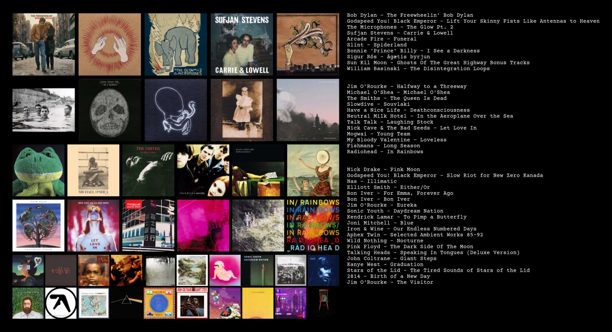

I am interested in computer science and mathematics, and hope to focus on Deep Reinforcement Learning, Theoretical Statistics, and Probability Theory in my junior and senior years.
Here is a list of the CS/Math courses I have taken and some general thoughts:
CS 61A: I came in never having written a line of code, and found it really hard at first until I kind of figured it out.
Math 1B: I really enjoyed the sequence/series stuff and for the most part the other stuff was essential too because my math was lagging a bit coming in.
CS 61B: This was the course where I actually started to know what I was doing when writing code. I started to have a much cleaner mind when writing code by using abstraction.
Math 53: 53 made me start feeling like I was enjoying and getting pretty good at math. My GSI was a topology PhD or something, he sometimes let real math slip into his discussions.
Math 54: This is a pretty by-the-textbook course. Linear Algebra was really cool to learn as someone who had no idea it existed before college.
CS 70: Similar to 54, just read the notes carefully for this class. Really enjoyed some parts, less so for other parts.
Math 110: We learned from Axler's book. I kind of regret not learning anything about determinants, gotta do that at some point.
CS 61C: Memorization and getting more into technical details is not really my favorite thing, so this wasn't my favorite course. High workload, have friends taking it with you for sure. Number representation and knowing stuff works is cool for sure though.
CS 170: This is a really cool class, just wish it felt a bit less random sometimes. Worth taking, not absolutely essential though.
Math H104: I actually learned so much from this class, very happy I took it. Pugh is great, I am taking 105 with him for sure.
CS 189: Taking Spring 2020
EECS 126: Taking Spring 2020
Math 105: Taking Spring 2020
EECS 16A: Taking Spring 2020
I am currently doing a research assistant for the Language and Cognitive Devlopment Lab, doing computational modelling and data analysis in relation to math conception.
Here is a chart of my favorite albums (not really ordered and very random assortment):
